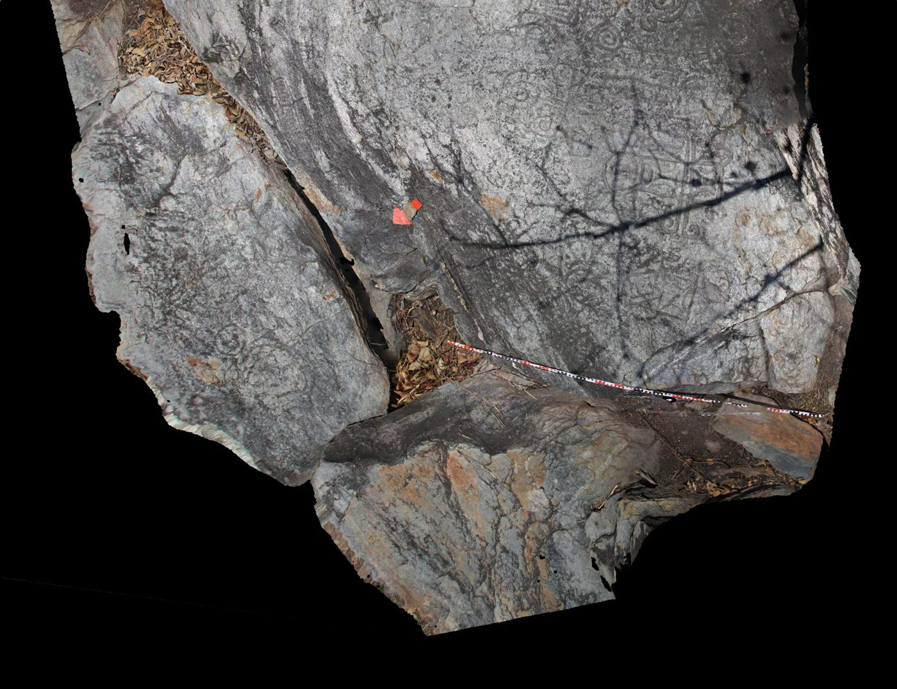

Historia, ubicación, horarios y todo lo que necesitas para planificar tu visita al Museo Arqueológico Piedra Pintada.
En nombre de la Secretaría de Cultura de la Gobernación del Estado Carabobo y la Dirección de Patrimonio Cultural e Histórico, damos la bienvenida al MUSEO PARQUE ARQUEOLÓGICO PIEDRA PINTADA.
Ubicado dentro del Parque Nacional San Esteban (sector Tronconero norte de Vigirima, Municipio Guacara, Edo. Carabobo), este parque resguarda el conjunto más importante de petroglifos, Menhires (únicos conocidos en Venezuela) y restos arqueológicos pertenecientes a las etnias del Caribe y Arawacos.
La palabra petroglifo es compuesta: petro=piedra y glifo=dibujo. No es más que un dibujo en una piedra. Los instrumentos usados para su elaboración fueron la piedra de cuarzo (para surcos profundos) y concha de caracol (para surcos superficiales). "Se dice" que tenían un significado mágico-religioso y como medio "posible" de comunicación y representación de su vida.
El IPC (Instituto de Patrimonio Cultural) gestionó en 1997 el diseño de un proyecto para convertir este lugar en un Parque Arqueológico, siendo ratificado como bien de interés cultural de la nación por decreto en 1999.
Conoce a los pioneros que han documentado y protegido este arte rupestre a lo largo de los siglos.
Avistamientos en el Río Orinoco.
Río Orinoco.
Río Orinoco.
Río Esequibo, Corentin, Cuyubiní.
Río Orinoco.
Río Blanco, Negro, Vaupés.
Río Rupunuri (afluente del Esequibo).
Primeros datos en San Esteban, Guataparo, Vigirima (Edo. Carabobo). También Cerritos de Padilla, Colonia Tovar y Río Esequibo.
Río Orinoco.
Menciona numerosos tallados en los valles de Aragua referentes a petroglifos.
Río Orinoco. Cordillera de la Costa. San Esteban, Edo. Carabobo.
San Esteban, Edo. Carabobo. Loma de Maya, Edo. Aragua.
Realiza algunas interpretaciones y descripciones en la zona de Vigirima.
Estudios de yacimientos y alineamientos de menhires en Vigirima (cerro los apios).
Dirige trabajos elaborando juicios sobre el uso y origen de los petroglifos.
Realizan comparaciones de los petroglifos de la Victoria (Aragua) con Vigirima.
Obra "El estudio del Arte Rupestre Venezolano" usando como referencia estos alineamientos.
Difunde artículos en la revista Guacareña "El Petroglifo" y organiza trabajos locales (junto a Rubby De Valencia y Jeannie Sujo Volsky en 1987).
Registro sistemático en Vigirima, referente de gran relevancia (documentales, tesis). Aportes al estudio de la roca S9R81.
Naturalista e investigador; estudio de técnicas de conservación preventiva del patrimonio arqueológico y voluntariado activo.
Registro y documentación moderna de 111 piedras en el Museo Piedra Pintada.

Aunque el IPC registró 165 petroglifos, el trabajo de la arqueóloga Karolina Juszczyk (2022) registró 111 piedras. Considerando entre 2 y 30 petroglifos por roca, ¡estaríamos hablando de aproximadamente 250 a 300 petroglifos en todo el parque!
En tu recorrido te encontrarás con figuras antropomorfas (humanas), geomorfas (geométricas), zoomorfas (animales), astromorfas (astros) y fitomorfas (plantas) distribuidas en cinco zonas:
Allí se encuentra la menor cantidad de petroglifos. Figuras de espirales, zoomorfas (posible venado) y puntos acoplados.
Contiene la mayor cantidad de rocas talladas del sitio, entre ellas la roca S9R81 (una de las más iconográficas del parque).
Pasando la quebrada al pie de la montaña; contiene puntos acoplados, espirales y antropomorfas.
Subiendo con una maravillosa vista panorámica. Astromorfas, huellas de pies y manos.
Único en Venezuela. Comprende 2 filas en la ladera del cerro, en un espacio de 192 mts de largo conformadas con piedras en posición vertical (menhires) con un tamaño promedio de 1,20 mts de alto.
Basado en la Guía práctica Elaborada por: Lcda. Liliana Perdomo (Coordinadora Museo Parque Arqueológico Piedra Pintada).
| Lunes – Viernes | Cargando... |
| Sábado | Cargando... |
| Domingo | Cargando... |
| Feriados nacionales | Cargando... |
* Última entrada 1 hora antes del cierre.
Resultados de la documentación arqueológica realizada por Karolina Juszczyk entre marzo de 2022, en el sitio arqueológico Museo Piedra Pintada, Vigírima, estado Carabobo.
Guacara-Tronconero, Estado Carabobo, Venezuela
El complejo más grande de arte rupestre estudiado en el proyecto
«Solo tres sitios pueden ser clasificados como complejos más grandes con arte rupestre: el Museo Piedra Pintada en Carabobo, donde documentamos 111 rocas en cinco montículos adyacentes, Montalbán en Carabobo, donde documentamos 34 rocas en tres colinas contiguas, y Patio Domingo Flores en Carabobo, donde documentamos 19 rocas en dos colinas adyacentes.»
— Karolina Juszczyk, Resultados Preliminares, Informe 2023
* Una roca puede tener múltiples orientaciones
⚠️ La roca S9R63 no se encuentra in situ; fue trasladada desde la parte norte del Montículo 2.
La predominancia del surco redondeado sugiere una técnica homogénea de percusión y abrasión en toda la zona S9.
La gran mayoría de las rocas está expuesta directamente al sol, lo que contribuye a los procesos de erosión natural.
Es una de las rocas con mayor concentración de grabados del parque. Consta de tres rocas pegadas entre sí, con dos rocas adicionales situadas muy cerca (S9R82 y S9R83).
📍 Junto a S9R81 se encuentran las rocas S9R82 y S9R83 (esta última situada al pie de S9R81); en conjunto destacan por la cantidad y variedad de grabados registrados en sus superficies.
Fuente: Juszczyk, K. (2023). Documentación de los petroglifos en el centro-norte de Venezuela. Informe de investigación arqueológica. Universidad de Varsovia / Proyecto AmerGraph.
Colaborador de campo: Stanisław Rzeźnik (fotografías documentales y modelos 3D). Informante local: Isis Flores.
El Parque Arqueológico Piedra Pintada se encuentra en el estado Venezuela. Existen varias rutas de acceso según tu punto de partida.